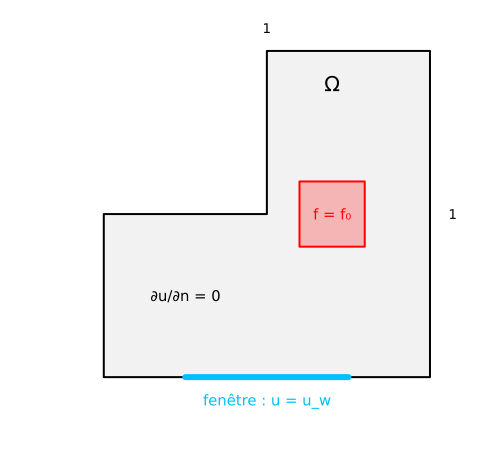
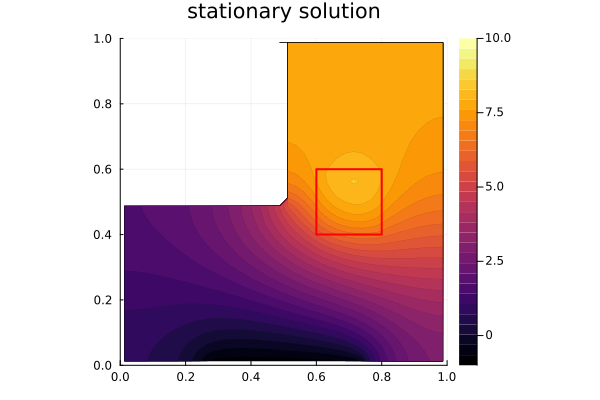
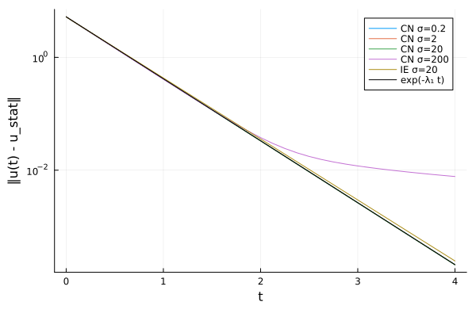
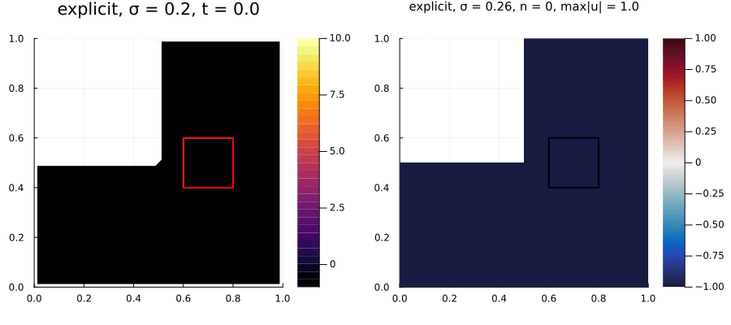

MAM4 - EDP1
2026-27
TP 2 - Équation de la chaleur
On souhaite simuler l'évolution de la température dans une pièce en forme de L
- dont le chauffage se situe au centre de la pièce, à droite du coin rentrant,
- dont les parois sont isolantes,
- à l'exception d'une fenêtre située sur le mur du bas.
On rappelle que cette température suit l'EDP de la chaleur 2D :
\[\begin{aligned} & \frac{\partial u}{\partial t} - \nu\Delta u = f,\quad t > 0,\quad (x,y) \in \Omega,\\ & u(0,x,y) = u_0(x,y),\quad (x,y) \in \Omega, \end{aligned}\]
avec des conditions aux limites appropriées sur le bord du domaine.
Le problème. La pièce est $\Omega := ]0,1[^2 \setminus [0,\tfrac12]\times[\tfrac12,1]$ (un carré dont on a retiré le coin supérieur gauche). Le chauffage est la source $f = f_0 = 250$ sur le carré $[0.6,0.8]\times[0.4,0.6]$ et $f = 0$ ailleurs, avec $\nu = 1$. Sur les parois, la condition est de Neumann homogène (parois isolantes) :
\[\frac{\partial u}{\partial n} = 0,\]
à l'exception de la fenêtre $\{(x,0)\,;\ \tfrac14 \le x \le \tfrac34\}$ sur le mur du bas, où la température est imposée (Dirichlet inhomogène) : $u = u_w = -1$. À l'instant initial, la pièce est à la température de la fenêtre : $u_0 \equiv u_w$.

Conventions numériques.
- Maillage en cellules. On découpe le carré $]0,1[^2$ en $N \times N$ cellules carrées de côté $h = 1/N$, et l'on garde les cellules contenues dans $\Omega$ ; $N$ est un multiple de $20$ (pour que le coin retiré, le chauffage et la fenêtre soient formés de cellules entières). L'inconnue $u_k$ approche la température au centre de la cellule $k$. En Julia, la cellule $(j,i)$ est repérée par sa ligne $j$ (en $y$) et sa colonne $i$ (en $x$).
- Différences finies. On intègre $-\nu\Delta u = f$ sur chaque cellule : le flux à travers une face commune à deux cellules voisines $k$ et $l$ est approché par $-\nu(u_l - u_k)/h$ ; un mur isolant ne donne aucun flux (le terme correspondant est simplement absent) ; une face de la fenêtre est à la température $u_w$, à distance $h/2$ du centre de la cellule, d'où le flux $\nu(u_k - u_w)/(h/2)$.
- Pas de temps. On pose $\sigma := \nu\Delta t/h^2$ (la quantité $\sigma_x = \sigma_y$ du cours, ici $\Delta x = \Delta y = h$). Le temps final $t_f$ est fixé et $\Delta t = t_f/N_t$ avec $N_t$ le plus petit entier tel que $\nu\Delta t/h^2 \le \sigma$ : faire varier $\sigma$ ne change pas $t_f$.
- Distance à l'état stationnaire. On mesure $\|u\| := \big(h^2\sum_k u_k^2\big)^{1/2}$, la norme $L^2$ discrète.
Le code ci-dessous est à exécuter une fois en début de session.
using SparseArrays, LinearAlgebra, Plots
# Problem data
ν = 1.0 # diffusion coefficient
uw = -1.0 # window temperature
f0 = 250.0 # heating power density
tf = 4.0 # final time
heater0 = ((0.6, 0.8), (0.4, 0.6)) # heater: x-range, y-range
umax = 10.0 # upper bound of the colour scale
# Geometry: Ω = ]0,1[² minus [0,1/2]×[1/2,1], cells of size h = 1/N.
# Cell (j, i): row j ↔ y, column i ↔ x. N must be a multiple of 20.
# Returns: mask (cells in Ω), win (cells touching the window), f (heating)
function lroom(N; heater = heater0)
@assert N % 20 == 0
mask = trues(N, N)
mask[N÷2+1:N, 1:N÷2] .= false # removed square
win = falses(N, N)
win[1, N÷4+1:3*N÷4] .= true # window: south wall, 1/4 ≤ x ≤ 3/4
c = ((1:N) .- 0.5) / N # cell centres (in x and in y)
(x0, x1), (y0, y1) = heater
f = zeros(N, N)
f[y0 .< c .< y1, x0 .< c .< x1] .= f0 # rows ↔ y, columns ↔ x
@assert all(mask[f .> 0]) # the heater must lie in Ω
return mask, win, f
end
# Cell values (vector) → matrix with NaN outside Ω (NaN cells are not drawn)
field(u, mask) = (U = fill(NaN, size(mask)); U[mask] = u; U)
# Filled contour plot of the cell values u, with the heater drawn as a red square
function heatplot(u, mask; title = "", heater = heater0)
N = size(mask, 1)
xc = ((1:N) .- 0.5) / N
p = contourf(xc, xc, field(u, mask); aspect_ratio = :equal, c = :inferno, levels = range(uw, umax, length = 33),
clims = (uw, umax), linewidth = 0, xlims = (0, 1), ylims = (0, 1), title = title)
(x0, x1), (y0, y1) = heater
plot!(p, [x0, x1, x1, x0, x0], [y0, y0, y1, y1, y0]; color = :red, linewidth = 2, label = false)
endExercice 1
On commence par le problème stationnaire (Poisson) : trouver $u$ telle que $-\nu\Delta u = f$ dans $\Omega$ avec les conditions aux limites ci-dessus. Le code suivant assemble la matrice $A$ et le second membre $b$ du système linéaire $Au = b$.
# Finite difference assembly of A ≃ -νΔ and b (heating + Dirichlet data).
# Cells are numbered columnwise: idx[mask] = 1:K
function assemble(mask, win, f, h; ν = 1.0, uw = 0.0)
K = count(mask)
idx = zeros(Int, size(mask))
idx[mask] = 1:K
rows, cols, vals = Int[], Int[], Float64[]
b = f[mask] # new array
for c ∈ findall(mask) # c = CartesianIndex(j, i)
k = idx[c]
d = 0.0
for δ ∈ (CartesianIndex(0, -1), CartesianIndex(0, 1), CartesianIndex(-1, 0), CartesianIndex(1, 0))
n = c + δ
if checkbounds(Bool, mask, n) && mask[n] # neighbour in Ω
push!(rows, k); push!(cols, idx[n]); push!(vals, -ν / h^2)
d += ν / h^2
end # else: insulating wall, no flux
end
if win[c] # Dirichlet face at distance h/2
d += 2ν / h^2
b[k] += 2ν / h^2 * uw
end
push!(rows, k); push!(cols, k); push!(vals, d)
end
return sparse(rows, cols, vals, K, K), b, idx
end
N = 40
h = 1 / N
mask, win, f = lroom(N)
A, b, idx = assemble(mask, win, f, h; ν = ν, uw = uw)
K = size(A, 1)
# Stationary solution: -νΔu = f (A is symmetric positive definite)
ustat = cholesky(Symmetric(A)) \ b
# Plot (move the heater with lroom(N; heater = ...), or the window in `lroom`)
heatplot(ustat, mask)1.1 Montrer que, pour une cellule $k$, la ligne $k$ du système s'écrit
\[\frac{\nu}{h^2}\Big( n_k u_k - \sum_{l \sim k} u_l \Big) + \frac{2\nu}{h^2}\,u_k\,\mathbf{1}_{k \in W} = f_k + \frac{2\nu}{h^2}\,u_w\,\mathbf{1}_{k \in W},\]
où $l \sim k$ désigne les cellules voisines de $k$ dans $\Omega$, $n_k$ leur nombre et $W$ l'ensemble des cellules de la fenêtre. Écrire $A$ à l'aide du laplacien du graphe des cellules, et vérifier que $A$ est symétrique.
Réponse. On intègre $-\nu\Delta u = f$ sur la cellule $k$ et on applique la formule de Green : $\int_{\partial k} -\nu\,\partial_n u = \int_k f \simeq h^2 f_k$. Chaque face commune avec une cellule voisine $l \in \Omega$ contribue $h \cdot \nu (u_k - u_l)/h = \nu(u_k - u_l)$. Une face sur un mur isolant contribue $0$. Une face de la fenêtre contribue $h\cdot\nu(u_k - u_w)/(h/2) = 2\nu(u_k - u_w)$. En divisant par $h^2$ on obtient la ligne annoncée. Donc
\[A = \frac{\nu}{h^2}\,L + \frac{2\nu}{h^2}\,D_W, \qquad b = f + \frac{2\nu}{h^2}\,u_w\,\mathbf{1}_W,\]
où $L = \mathrm{diag}(n_k) - (\text{matrice d'adjacence})$ est le laplacien du graphe des cellules et $D_W$ la diagonale de l'indicatrice de $W$. Les deux matrices sont symétriques : l'adjacence l'est (si $l \sim k$ alors $k \sim l$) et les termes diagonaux aussi.
1.2 Montrer que $A$ est symétrique définie positive. Quel est le rôle de la fenêtre ? Que se passerait-il sans fenêtre (Neumann sur tout le bord) ?
Réponse. Pour tout $v$,
\[v^\top A v = \frac{\nu}{h^2}\sum_{\{k,l\}\ \text{voisines}} (v_k - v_l)^2 + \frac{2\nu}{h^2}\sum_{k \in W} v_k^2 \ \ge\ 0.\]
Si $v^\top A v = 0$, alors $v_k = v_l$ pour toutes les cellules voisines, donc $v$ est constant (la pièce est connexe), puis $v_k = 0$ sur $W$, qui est non vide : $v = 0$. Donc $A$ est définie positive. Sans fenêtre, le second terme disparaît et les constantes sont dans le noyau de $A$ : le problème de Neumann pur est singulier, et il n'a de solution que si $\int f = 0$. Physiquement, une pièce isolée et chauffée n'a pas d'état stationnaire : la température monte indéfiniment. La fenêtre évacue la chaleur et rend le problème bien posé.
1.3 Exécuter le code et tracer la solution stationnaire. Vérifier numériquement le bilan d'énergie : la puissance de chauffe $h^2\sum_k f_k$ est égale au flux sortant par la fenêtre $h^2\sum_{k\in W}\frac{2\nu}{h^2}(u_k - u_w)$. Démontrer ce bilan au niveau discret.
# Energy balance: heating power = flux through the window
power = h^2 * sum(f)
flux = h^2 * sum(2ν / h^2 * (ustat[idx[win]] .- uw))
@show power fluxRéponse. Pour $N = 40$, $h^2\sum_k f_k = 10$ (soit $250 \times 0.2 \times 0.2 = 10$) et le flux par la fenêtre vaut $10$ à $10^{-12}$ près. Démonstration : on somme les lignes du système, c'est-à-dire $\mathbf{1}^\top A u = \mathbf{1}^\top b$. Comme $L\mathbf{1} = 0$ et que $L$ est symétrique, $\mathbf{1}^\top L = 0$, et il reste
\[\frac{2\nu}{h^2}\sum_{k\in W} u_k = \sum_k f_k + \frac{2\nu}{h^2}\,u_w\,|W|, \quad\text{i.e.}\quad h^2\sum_{k\in W}\frac{2\nu}{h^2}(u_k - u_w) = h^2\sum_k f_k.\]
La température maximale vaut $8.30$ pour $N = 40$, atteinte dans le chauffage.

1.4 Déplacer le chauffage (argument heater de lroom) et la fenêtre, et commenter. Par exemple, comparer le chauffage en $[0.6,0.8]\times[0.4,0.6]$ et en $[0.6,0.8]\times[0,0.2]$ : que devient la température maximale, à puissance de chauffe égale ? Le bilan d'énergie change-t-il ?
Réponse. Le bilan d'énergie ne change pas : le flux par la fenêtre est toujours égal à la puissance de chauffe ($10$ dans les deux cas). En revanche la température maximale passe de $8.30$ (chauffage au centre, loin de la fenêtre) à $2.20$ (chauffage en bas, près de la fenêtre), pour $N = 40$ : la chaleur est évacuée avant d'avoir pu se répartir dans la pièce.
1.5 Validation. Pour vérifier le code d'assemblage, on prend le carré $]0,1[^2$ avec Dirichlet $u = 0$ sur tout le mur du bas et Neumann ailleurs, et $f(x,y) = \nu\frac{\pi^2}{4}\sin\big(\frac{\pi y}{2}\big)$. Donner la solution exacte, puis calculer l'erreur maximale aux centres des cellules pour $N = 20, 40, 80, 160$ et en déduire l'ordre observé.
# Validation: unit square, u = 0 on the whole south wall, Neumann elsewhere,
# f = (π²/4) sin(πy/2) (ν = 1); exact solution u = sin(πy/2)
function test_square(N)
h = 1 / N
mask = trues(N, N)
win = falses(N, N)
win[1, :] .= true
y = ((1:N) .- 0.5) * h
f = repeat(π^2 / 4 * sin.(π * y / 2), 1, N)
A, b, _ = assemble(mask, win, f, h) # ν = 1, uw = 0
u = cholesky(Symmetric(A)) \ b
return maximum(abs.(u - vec(repeat(sin.(π * y / 2), 1, N))))
end
for N ∈ (20, 40, 80, 160)
println("N = $N: max error = $(test_square(N))")
endRéponse. La solution exacte est $u(x,y) = \sin(\pi y/2)$ : elle vérifie $-\nu u_{yy} = \nu\frac{\pi^2}{4}\sin(\pi y/2)$, $u(x,0) = 0$, $\partial_y u(x,1) = \frac{\pi}{2}\cos\frac{\pi}{2} = 0$ et $\partial_x u = 0$. L'erreur maximale vaut $5.1\cdot10^{-4}$, $1.3\cdot10^{-4}$, $3.2\cdot10^{-5}$, $8.0\cdot10^{-6}$ : elle est divisée par $4$ quand $h$ est divisé par $2$, soit un ordre $2$ (la condition de Dirichlet à distance $h/2$ du centre est bien d'ordre $2$).
1.6 Convergence sur la pièce en L. Calculer $\int_\Omega u \simeq h^2\sum_k u_k$ et $\max u$ pour $N = 20, 40, 80, 160$. Quel ordre observe-t-on ? Pourquoi est-il différent de celui de la question précédente ?
# Convergence on the L-shaped room: ∫u ≃ h² Σ u_k and max u
function steady(N)
h = 1 / N
mask, win, f = lroom(N)
A, b, _ = assemble(mask, win, f, h; ν = ν, uw = uw)
u = cholesky(Symmetric(A)) \ b
return h^2 * sum(u), maximum(u)
end
for N ∈ (20, 40, 80, 160)
I, m = steady(N)
println("N = $N: ∫u = $I, max u = $m")
endRéponse. On obtient
| $N$ | $20$ | $40$ | $80$ | $160$ |
|---|---|---|---|---|
| $\int_\Omega u$ | $3.319$ | $3.235$ | $3.196$ | $3.178$ |
| $\max u$ | $8.47$ | $8.30$ | $8.22$ | $8.19$ |
Les différences successives de $\int_\Omega u$ sont $0.083$, $0.039$, $0.019$ : leur rapport est proche de $2$, donc la convergence est d'ordre $1$ (et non $2$). La solution n'est pas régulière : elle présente des singularités aux deux extrémités de la fenêtre, où la condition passe de Dirichlet à Neumann (comportement en $r^{1/2}$ avec $r$ la distance au point de raccord), et au coin rentrant $(\tfrac12,\tfrac12)$ (comportement en $r^{2/3}$). Dans le cas test, la solution est régulière, d'où l'ordre $2$.
Exercice 2
On calcule maintenant l'évolution temporelle de la température. On utilise le $\theta$-schéma
\[\frac{u^{n+1} - u^n}{\Delta t} + A\big(\theta u^{n+1} + (1-\theta)u^n\big) = b,\]
c'est-à-dire
\[(I + \theta\Delta t\,A)\,u^{n+1} = \big(I - (1-\theta)\Delta t\,A\big)u^n + \Delta t\,b,\]
où $A$ et $b$ sont ceux de l'exercice 1 ($b$ contient à la fois le chauffage et la donnée de Dirichlet). Le cas $\theta = 0$ est le schéma explicite, $\theta = 1$ le schéma d'Euler implicite et $\theta = \tfrac12$ le schéma de Crank-Nicolson.
2.1 Pour une cellule intérieure (ses quatre voisines sont dans $\Omega$, pas de terme source), écrire le schéma de Crank-Nicolson ($\theta = \frac12$) et le comparer à
\[\begin{aligned} & u_k^{n+1} - \frac{\sigma}{2}(u_{kW}^{n+1} - 2u_k^{n+1} + u_{kE}^{n+1}) - \frac{\sigma}{2}(u_{kN}^{n+1} - 2u_k^{n+1} + u_{kS}^{n+1})\\ & = u^n_k + \frac{\sigma}{2}(u_{kW}^n - 2u_k^n + u_{kE}^{n}) + \frac{\sigma}{2}(u_{kN}^n - 2u_k^n + u_{kS}^n) + \Delta t\, f_k, \end{aligned}\]
où $\sigma = \nu\Delta t/h^2$ (c'est le schéma du cours avec $\sigma_x = \sigma_y = \sigma$, car $\Delta x = \Delta y = h$). Que deviennent les termes de bord (mur isolant, fenêtre) dans l'écriture matricielle ?
Réponse. Pour une cellule intérieure, $(Au)_k = \frac{\nu}{h^2}(4u_k - u_{kW} - u_{kE} - u_{kS} - u_{kN})$, donc $\big((I + \tfrac{\Delta t}{2}A)u\big)_k = u_k - \frac{\sigma}{2}(u_{kW} - 2u_k + u_{kE}) - \frac{\sigma}{2}(u_{kS} - 2u_k + u_{kN})$ avec $\sigma = \nu\Delta t/h^2$ : on retrouve exactement le schéma de l'énoncé. Pour une cellule au bord, la forme matricielle absorbe les conditions aux limites : le mur isolant supprime le voisin manquant dans la ligne de $A$ (Neumann), et la fenêtre ajoute $\frac{2\nu}{h^2}$ sur la diagonale de $A$ et $\frac{2\nu}{h^2}u_w$ dans $b$ (Dirichlet).
2.2 Stabilité. Les valeurs propres de $A$ sont notées $0 < \lambda_1 \le \dots \le \lambda_K$. Exprimer le facteur d'amplification du $\theta$-schéma sur chaque mode propre. Montrer que le schéma de Crank-Nicolson est stable pour tout $\Delta t > 0$. Montrer que $\lambda_K \le 8\nu/h^2$ (lemme de Gershgorin) et en déduire une condition suffisante de stabilité pour le schéma explicite en fonction de $\sigma$.
Réponse. $A$ est symétrique définie positive, donc diagonalisable dans une base orthonormée. Sur le mode propre associé à $\lambda$, le schéma multiplie l'amplitude par
\[a(\lambda) = \frac{1 - (1-\theta)\Delta t\lambda}{1 + \theta\Delta t\lambda}.\]
Pour $\theta = \frac12$, $a = \frac{1 - z}{1 + z}$ avec $z = \Delta t\lambda/2 > 0$, donc $|a| < 1$ pour tout $\Delta t > 0$ : le schéma est inconditionnellement stable. Pour $\theta = 1$, $a = 1/(1 + \Delta t\lambda) \in (0,1)$ : également inconditionnellement stable. Pour $\theta = 0$, $a = 1 - \Delta t\lambda$ et $|a| \le 1$ pour tous les modes si et seulement si $\Delta t\lambda_K \le 2$. D'après Gershgorin, chaque valeur propre est dans un disque de centre $A_{kk}$ et de rayon $\sum_{l\neq k}|A_{kl}| = \frac{\nu}{h^2}n_k$ ; pour une cellule intérieure $A_{kk} = 4\nu/h^2$ et le rayon vaut $4\nu/h^2$, et pour une cellule de la fenêtre au pied d'un mur ($3$ voisines) $A_{kk} = 5\nu/h^2$ et le rayon $3\nu/h^2$. Donc $\lambda_K \le 8\nu/h^2$, et $\sigma = \nu\Delta t/h^2 \le \frac14$ suffit. Numériquement, pour $N = 40$, $\lambda_K = 12775 \simeq 8\nu/h^2 = 12800$ : la condition est quasiment nécessaire, et $\lambda_1 = 2.529$.
2.3 Compléter la fonction evolve (# TBC) pour programmer le $\theta$-schéma, puis exécuter Crank-Nicolson avec $\sigma = 2$ et $t_f = 4$. Que se passe-t-il au bout d'un temps long ? Comparer avec la solution stationnaire de l'exercice 1 en traçant $\|u(t) - u_{\mathrm{stat}}\|$ en fonction de $t$ (échelle logarithmique), pour Crank-Nicolson avec $\sigma = 0.2,\ 2,\ 20,\ 200$ et Euler implicite avec $\sigma = 20$. Quelle est la vitesse de convergence observée ? La relier à $\lambda_1$ (obtenue par eigvals(Symmetric(Matrix(A)), 1:1)).
# θ-scheme: (I + θΔt A) uⁿ⁺¹ = (I - (1-θ)Δt A) uⁿ + Δt b.
# θ = 0: explicit, θ = 1/2: Crank-Nicolson, θ = 1: implicit Euler.
# tf is fixed; the number of steps is deduced from σ = νΔt/h²
Id = sparse(1.0I, K, K)
nsteps(σ, T) = ceil(Int, T * ν / (σ * h^2) - 1e-9)
dist(u) = h * norm(u - ustat) # distance to the stationary solution
function evolve(θ, σ; T = tf, callback = (n, t, u) -> nothing)
Nt = nsteps(σ, T)
Δt = T / Nt
F = cholesky(Symmetric(Id + θ * Δt * A)) # factorisation, once and for all
E = Id - (1 - θ) * Δt * A
u = fill(uw, K) # u0 = uw
err = [dist(u)]
callback(0, 0.0, u)
for n ∈ 1:Nt
u = F \ (E * u + Δt * b)
push!(err, dist(u))
callback(n, n * Δt, u)
end
return u, err, Δt
end
# Crank-Nicolson, σ = 2: distance to the stationary solution along time
u, err, Δt = evolve(0.5, 2.0)
p = plot(; yscale = :log10, xlabel = "t", ylabel = "‖u(t) - u_stat‖")
for (θ, σ, name) ∈ ((0.5, 0.2, "CN σ=0.2"), (0.5, 2.0, "CN σ=2"), (0.5, 20.0, "CN σ=20"), (0.5, 200.0, "CN σ=200"), (1.0, 20.0, "IE σ=20"))
_, e, dt = evolve(θ, σ)
plot!(p, (0:length(e)-1) * dt, e; label = name)
end
display(p)
# Slowest mode: smallest eigenvalue of A (dense, K ≃ 1200)
λ1 = eigvals(Symmetric(Matrix(A)), 1:1)[1]Réponse. La température converge vers la solution stationnaire de l'exercice 1 (le chauffage est constant) : $\|u(t) - u_{\mathrm{stat}}\|$ passe de $5.24$ à $t = 0$ à $0.41$ en $t = 1$ puis à $2.1\cdot10^{-4}$ en $t = 4$ (Crank-Nicolson, $\sigma = 0.2,\ 2,\ 20$ : les trois courbes sont confondues à trois chiffres). La décroissance est exponentielle, de taux $\lambda_1 = 2.53$, ce qui est la courbe $e^{-\lambda_1 t}$ de la figure : $5.24\cdot e^{-4\lambda_1} = 2.1\cdot10^{-4}$, ce qui coïncide à $1\,\%$ près avec la valeur observée. En effet $u(t) - u_{\mathrm{stat}}$ se décompose sur les modes propres de $A$ avec des amplitudes $e^{-\lambda t}$, et le mode le plus lent domine (constante de temps $1/\lambda_1 \simeq 0.4$).


2.4 Schéma explicite. Exécuter evolve(0.0, σ) pour $\sigma = 0.2$ et $\sigma = 0.26$ (avec un temps final plus court si besoin). Combien de pas de temps faut-il à $t_f = 4$ pour le schéma explicite à la limite de stabilité, pour Crank-Nicolson avec $\sigma = 2$ et avec $\sigma = 20$ ? Commenter le coût.
Réponse. Pour $\sigma = 0.2$ le schéma explicite donne la même solution que Crank-Nicolson, mais pour $\sigma = 0.26$ il explose : le maximum de $|u|$ atteint $1\cdot10^{4}$ au pas $300$ et $2\cdot10^{7}$ au pas $400$, et la solution dépasse $10^{100}$ au bout d'environ $3300$ pas (puis Inf et NaN). On voit l'instabilité se développer sous forme d'oscillations d'une maille à l'autre (en damier), amorcées par les arêtes du chauffage ; le mode instable est celui de plus grande valeur propre, $a = 1 - \Delta t\lambda_K \simeq 1 - 8\sigma < -1$ dès que $\sigma > 1/4$.
Sur l'animation, à gauche le schéma explicite stable ($\sigma = 0.2$) jusqu'à $t = 1$ ($8000$ pas), à droite le schéma instable ($\sigma = 0.26$) sur ses $400$ premiers pas, avec une échelle de couleurs symétrique $\pm\max|u|$ qui suit l'explosion (rouge positif, bleu négatif) : on voit le damier se former.

Le nombre de pas pour $t_f = 4$ est $32\,000$ ($\sigma = 0.2$, explicite), $3200$ ($\sigma = 2$) et $320$ ($\sigma = 20$). Chaque pas de Crank-Nicolson coûte une résolution avec la factorisation (calculée une seule fois), plus chère qu'un produit matrice-vecteur, mais le gain de dix à cent fois en nombre de pas compense largement tant qu'on n'a pas besoin de résoudre la dynamique rapide.
2.5 Ordre en temps. Calculer une solution de référence à $t = 0.5$ avec Crank-Nicolson et $\sigma = 0.02$, puis l'erreur de Crank-Nicolson et d'Euler implicite pour $\sigma = 0.2,\ 0.4,\ \dots,\ 6.4$. Quels ordres observe-t-on ?
# Order in time at t = 0.5: reference = Crank-Nicolson with σ = 0.02
uref, _, _ = evolve(0.5, 0.02; T = 0.5)
for θ ∈ (0.5, 1.0), σ ∈ (0.2, 0.4, 0.8, 1.6, 3.2, 6.4)
uθ, _, _ = evolve(θ, σ; T = 0.5)
println("θ = $θ, σ = $σ: error = $(h * norm(uθ - uref))")
endRéponse. Les erreurs $\|u^{N_t} - u_{\mathrm{ref}}\|$ à $t = 0.5$ sont :
| $\sigma$ | $0.2$ | $0.4$ | $0.8$ | $1.6$ | $3.2$ | $6.4$ |
|---|---|---|---|---|---|---|
| Crank-Nicolson | $1.5\cdot10^{-8}$ | $6.2\cdot10^{-8}$ | $2.5\cdot10^{-7}$ | $9.9\cdot10^{-7}$ | $4.0\cdot10^{-6}$ | $1.6\cdot10^{-5}$ |
| Euler implicite | $2.9\cdot10^{-4}$ | $5.9\cdot10^{-4}$ | $1.2\cdot10^{-3}$ | $2.3\cdot10^{-3}$ | $4.7\cdot10^{-3}$ | $9.4\cdot10^{-3}$ |
Quand $\Delta t$ (donc $\sigma$) double, l'erreur est multipliée par $4$ pour Crank-Nicolson (ordre $2$) et par $2$ pour Euler implicite (ordre $1$).
2.6 Pas de temps très grand. Pour $\sigma = 200$, comparer Crank-Nicolson et Euler implicite : erreur à $t_f = 4$, et monotonie en temps. Pourquoi la température doit-elle être croissante en tout point (rappel : $f \ge 0$ et $u_0 \equiv u_w$) ? Ce que l'on observe est-il compatible avec cette propriété ? Expliquer avec $a(\lambda)$ quand $\Delta t\lambda \to \infty$.
# Monotonicity: smallest increment uⁿ⁺¹_k - uⁿ_k over all cells and steps
function min_increment(θ, σ)
uprev = fill(uw, K)
m = Inf
evolve(θ, σ; callback = (n, t, u) -> begin
n > 0 && (m = min(m, minimum(u - uprev)))
uprev = copy(u)
end)
return m
end
for (θ, name) ∈ ((0.5, "Crank-Nicolson"), (1.0, "implicit Euler"))
_, e, _ = evolve(θ, 200.0)
println("$name, σ = 200: error at tf = $(e[end]), min increment = $(min_increment(θ, 200.0))")
end
# Explicit scheme just above and just below σ = 1/4 (T shortened to 400 steps)
for σ ∈ (0.2, 0.26)
ux, _, _ = evolve(0.0, σ; T = 400 * σ * h^2 / ν)
println("explicit, σ = $σ: max|u| after 400 steps = $(maximum(abs, ux))")
endRéponse. Pour $\sigma = 200$, l'erreur à $t_f = 4$ vaut $7.7\cdot10^{-3}$ pour Crank-Nicolson contre $7.9\cdot10^{-4}$ pour Euler implicite : Crank-Nicolson, qui est pourtant d'ordre $2$, fait moins bien. Le plus petit incrément $u^{n+1}_k - u^n_k$ vaut $-0.81$ pour Crank-Nicolson, alors qu'il reste positif (de l'ordre de $10^{-5}$) pour Euler implicite. La température doit être croissante parce que $v := \partial_t u$ vérifie la même équation de la chaleur, avec la donnée initiale $v(0) = \nu\Delta u_0 + f = f \ge 0$ (en prenant $u_0 \equiv u_w$) et des conditions aux limites homogènes ; le principe du maximum donne $v \ge 0$. Pour Euler implicite, $a(\lambda) = 1/(1 + \Delta t\lambda) \to 0^+$ : les modes rapides sont éteints sans changer de signe. Pour Crank-Nicolson, $a(\lambda) = \frac{1 - z}{1 + z} \to -1$ quand $z = \Delta t\lambda/2 \to \infty$ : pour $\sigma = 200$ le mode le plus raide a $|a| = 0.9975$, donc il n'est pratiquement pas amorti et il change de signe à chaque pas. Crank-Nicolson est $A$-stable mais pas $L$-stable : au-delà d'un certain pas de temps, on perd la monotonie et la précision des modes rapides.
Annexe. Figures et animations
Le code suivant produit les figures et les GIF du corrigé et le schéma de la pièce de l'énoncé (le GIF ci-dessous est celui de la question 2.3) ; il utilise les objets définis plus haut.
# Sketch of the room (used in the statement)
sketch = plot(; aspect_ratio = :equal, xlims = (-0.12, 1.12), ylims = (-0.12, 1.12), legend = false, framestyle = :none, size = (500, 450))
plot!(sketch, Shape([0, 1, 1, 0.5, 0.5, 0], [0, 0, 1, 1, 0.5, 0.5]); fillcolor = :gray95, linecolor = :black, linewidth = 2)
(x0, x1), (y0, y1) = heater0
plot!(sketch, Shape([x0, x1, x1, x0], [y0, y0, y1, y1]); fillcolor = :red, fillalpha = 0.25, linecolor = :red, linewidth = 2)
plot!(sketch, [0.25, 0.75], [0, 0]; color = :deepskyblue, linewidth = 6)
annotate!(sketch, 0.7, 0.9, text("Ω", 14)); annotate!(sketch, 0.7, 0.5, text("f = f₀", 10, :red))
annotate!(sketch, 0.5, -0.07, text("fenêtre : u = u_w", 10, :deepskyblue)); annotate!(sketch, 0.25, 0.25, text("∂u/∂n = 0", 10))
annotate!(sketch, 0.5, 1.07, text("1", 9)); annotate!(sketch, 1.07, 0.5, text("1", 9))
savefig(sketch, "chaleur_piece.png")
# Stationary solution (question 1.3)
heatplot(ustat, mask; title = "stationary solution")
savefig("chaleur_stationnaire.png")
# Error curves (question 2.3), with the slowest-mode rate e^(-λ₁ t)
t = range(0, tf, length = 50)
plot!(p, t, dist(fill(uw, K)) * exp.(-λ1 * t); color = :black, label = "exp(-λ₁ t)")
savefig(p, "chaleur_erreur.png")
# Crank-Nicolson, σ = 2 (question 2.3): 40 frames
heat(u, title) = heatplot(u, mask; title = title)
every = nsteps(2.0, tf) ÷ 40
anim = Animation()
evolve(0.5, 2.0; callback = (n, t, u) -> begin
n % every == 0 && frame(anim, heat(u, "Crank-Nicolson, σ = 2, t = $(round(t, digits = 2))"))
end)
gif(anim, "chaleur_cn.gif"; fps = 10)
# Explicit scheme (question 2.4): σ = 0.2 (stable) up to t = 1 (8000 steps), next to
# σ = 0.26 (unstable), first 400 steps; 51 frames each
stable, unstable = [], []
evolve(0.0, 0.2; T = 1.0, callback = (n, t, u) -> n % 160 == 0 && push!(stable, (t, copy(u))))
evolve(0.0, 0.26; T = 400 * 0.26 * h^2 / ν, callback = (n, t, u) -> n % 8 == 0 && push!(unstable, (n, copy(u))))
# Unstable field: values of alternating sign that blow up, drawn with a symmetric scale ±max|u|
xc = ((1:N) .- 0.5) * h
function unstable_plot(u, n)
m = maximum(abs, u)
p = heatmap(xc, xc, field(u, mask); aspect_ratio = :equal, c = :balance, clims = (-m, m), xlims = (0, 1), ylims = (0, 1),
title = "explicit, σ = 0.26, n = $n, max|u| = $(round(m, sigdigits = 2))", titlefontsize = 10)
(x0, x1), (y0, y1) = heater0
plot!(p, [x0, x1, x1, x0, x0], [y0, y0, y1, y1, y0]; color = :black, linewidth = 2, label = false)
end
anim = Animation()
for ((t, us), (n, uu)) ∈ zip(stable, unstable)
frame(anim, plot(heat(us, "explicit, σ = 0.2, t = $(round(t, digits = 2))"),
unstable_plot(uu, n); layout = (1, 2), size = (900, 400)))
end
gif(anim, "chaleur_explicite.gif"; fps = 10)